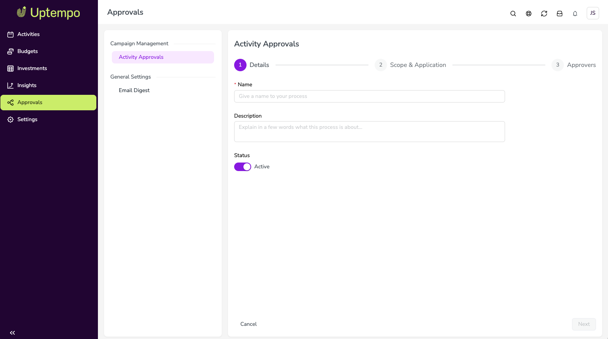
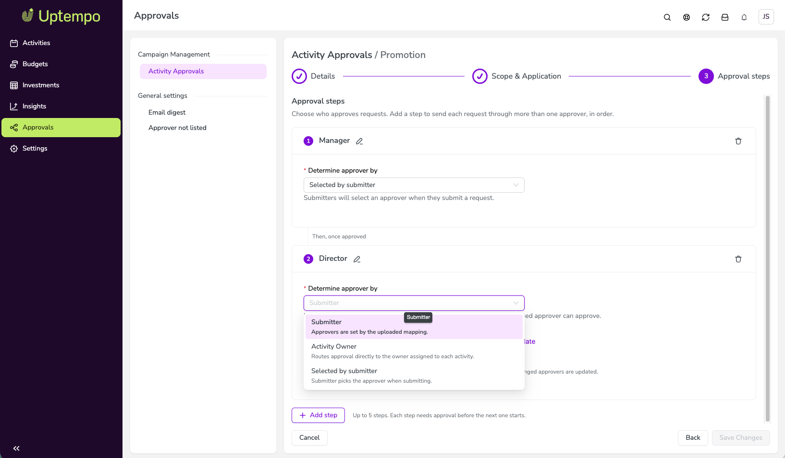
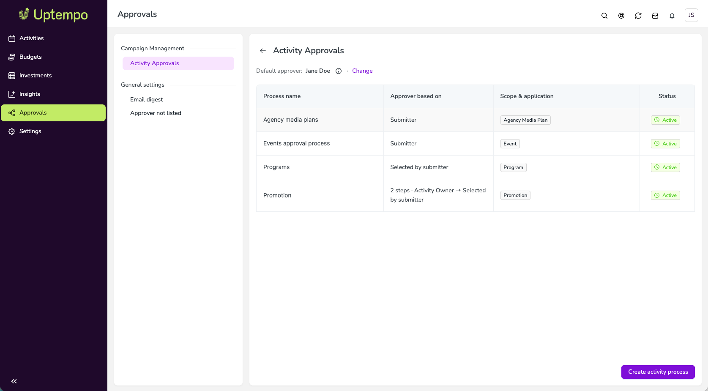

Set up activity approval processes
An approval process defines which activity types need approval, and who approves them, in one or more approval steps. As an admin, you create and manage approval processes from the Approvals page.
Before you begin
Activity approvals must be enabled in your Uptempo instance. This feature is in Preview; contact your Customer Success Manager to enable it.
You must have administrator access to Campaign Management.
A default approver must be set before you can activate a process. See Set the default approver.
If a step uses a mapping, prepare one mapping file for that step. Collect the email address of each submitter or activity owner, and of their approvers. Approvers must be able to edit the activities they approve.
To route a step by activity owner, the Owner field must be turned on for every activity type the process covers.
How approval processes work
Process scope
Each approval process covers one or more activity types. One process can cover several activity types, but each activity type belongs to only one active process. When you select activity types for a process, types already covered by another active process can't be selected, and Uptempo shows which process covers them.
Only activities whose type is covered by an active process can be submitted for approval.
Approval steps
Each process has one to five approval steps. A request goes through the steps in order, and each step must be approved before the next step's approvers see the request. A denial at any step denies the request.
Each step has:
A name (optional): For example, Manager or Director. Submitters and approvers see the name in the approval route and the approval history. A step without a name is shown as Step 1, Step 2, and so on.
An approver source: How Uptempo determines the step's approvers.
A process with one step works as a single approval.
Approver sources
Use Determine approver by to choose a step's approver source. Different steps in the same process can use different sources.
- Submitter
Approvers are set by a submitter-to-approver mapping that you upload for the step. The file maps each submitter's email address to one or more approver email addresses. Any one mapped approver can approve the step. Submitters can't change their approvers.
- Activity owner
Approvers are set by an activity owner-to-approver mapping that you upload for the step. The file maps each activity owner's email address to one or more approver email addresses. Requests route by the activity's owner, whoever submits them. Any one mapped approver can approve the step.
- Selected by submitter
Submitters choose one approver for the step when they submit. Only users who can edit the activity can be selected. No file is needed. If the approver a submitter needs isn't listed, they see the approver not listed message.
The activity owner is the user in the activity's system Owner field (not a custom attribute). Uptempo records the activity owner when a request is submitted, and uses that owner for every activity owner step in the request's route. If the Owner field isn't turned on for every activity type in the process, the activity owner source is unavailable, and an icon next to it names the activity types that need the field.
Default approver
The default approver receives a step when the step has no eligible approver. There is one default approver for all activity approval processes. Uptempo sends a step to the default approver when:
The submitter, or the activity owner, isn't listed in the step's mapping file.
The activity has no activity owner, or the activity owner was inactive when the request was submitted.
The only approver for the step is the submitter, or, on an activity owner step, the activity owner.
None of the step's approvers can edit the activity.
Submission is never blocked in these cases, and no step is skipped. The approval history shows why the step was reassigned.
You can replace the default approver at any time, but you can't remove it.
Mapping file checks
When you upload a mapping file, Uptempo checks it for problems:
- Errors
The same submitter or activity owner listed more than once. You can't save the file until you fix this and upload the file again.
- Warnings
Unknown email addresses, inactive users, or approvers who can't edit the activities they're mapped to. You can continue, but requests affected by these problems go to the default approver. Fix them to make sure requests reach the right people.
Mapping files don't include a default approver. The default approver is set separately for all processes.
Changes to existing processes
Changes to a process, its approval steps, or its mapping files apply to new requests only. Requests already in progress finish on the route they were submitted with.
Uploading a new mapping file for a step merges it into that step's current mapping: new rows are added, and rows with changed approvers are updated. Other steps aren't affected.
If you change the approver source of a step that has an uploaded file, Uptempo asks you to confirm before it discards the file.
Create an approval process
In the navigation menu, click Approvals.
On the Approvals page, click
 Open approval settings.
Open approval settings.In the settings menu, under Campaign Management, click Activity Approvals, then click Create activity process.
On the Details step:
Enter a Name for the process (required).
Optional: Enter a Description.
Use the Status toggle to set the process to Active or inactive. Inactive processes don't accept new submissions.
Click Next.

On the Scope & Application step, select one or more activity types for the process to cover. Activity types are grouped by activity type group; use the search field to find a type. Click Next.
On the Approval steps step, set up the first step:
Optional: Click
 Edit next to Step 1 to name the step.
Edit next to Step 1 to name the step.In Determine approver by, select an approver source.
For Submitter or Activity owner, upload a mapping file, as described in Upload a mapping file.
Optional: To add another step, click Add step, then set it up the same way. You can add up to five steps.

Click Create activity process. The button is available only when every step has a complete approver source.


The process is saved and appears in the approval process list. If the process is active, users can now submit activities of the covered types for approval.
Upload a mapping file
Steps that use the submitter or activity owner source need a mapping file. Each step has its own file.
On the Approval steps step of a process, find the step and make sure Determine approver by is set to Submitter or Activity owner.
Click Download the CSV template to download the template for that source.
Fill in the template:
Add one row per submitter or activity owner, with their email address.
Add one or more approver email addresses on each row.
Click Upload mapping and select your completed file.
Review the results of the file checks:
If Uptempo shows errors, fix them in your file and upload it again.
If Uptempo shows warnings, review them. Upload a corrected file, or continue.
Click Create activity process, or Save Changes if you're editing an existing process.
The mapping is saved, and the filename is shown on the step. New requests are routed to the approvers in the file.
Add, rename, or remove an approval step
On the Approvals page, click
Open approval settings, then click Activity Approvals.In the approval process list, click the process, then go to the Approval steps step.
Make your changes:
Add a step: Click Add step, then choose an approver source. Add step isn't available once a process has five steps.
Rename a step: Click
Edit next to the step name and enter a new name.Remove a step: Click Delete on the step. If the step is already set up, Uptempo asks you to confirm. A process's only step can't be removed.
Click Save Changes.
Your changes apply to new requests. Requests already in progress finish on the route they were submitted with.
Set the default approver
On the Approvals page, click
Open approval settings, then click Activity Approvals.Next to Default approver, click Change.
Select the user who should receive steps that have no eligible approver.
Save your change.
The default approver applies to all activity approval processes, including requests already in progress when a step is next reassigned.


Customize the approver not listed message
When a submitter selects an approver and can't find the person they need, Uptempo shows a Can't find your approver? message. You can customize the message, for example to link to your organization's process for requesting access. The message applies to every step that uses the selected by submitter source, in every process.
By default, the message reads: "Approvers must have edit access to this activity. Contact your Uptempo administrator and ask them to add your approver to Uptempo or give them edit access. Once they have access, return here to submit your request."
On the Approvals page, click
Open approval settings.In the settings menu, under General settings, click Approver not listed.
Edit the Message (required, up to 300 characters).
Optional: Enter a Link URL, then a Link label. The link label can be edited only after you enter a link URL.
Check the Preview to see what submitters see.
Click Save changes.
Submitters see your message the next time they can't find an approver. To return to the default message, click Reset to default.

Edit an approval process
On the Approvals page, click
Open approval settings, then click Activity Approvals.In the approval process list, click the process you want to change.
Go directly to the Details, Scope & Application, or Approval steps step and make your changes.
Click Save Changes. Save Changes is available only when something has changed and all required fields are valid.
Your changes apply to new requests. Requests already in progress aren't affected.
Deactivate an approval process
When you deactivate a process, users can no longer submit activities for approval for the activity types it covers. Requests already in progress continue on their route, and approvers can still decide on them.
On the Approvals page, click
Open approval settings, then click Activity Approvals.In the approval process list, click the process you want to deactivate.
On the Details step, set the process to Inactive.
Click Save Changes.
The process is deactivated. Its activity types can now be added to another active process.